Um contador de pontos para dois jogadores, feito só com lógica digital: sem microcontrolador, sem código.
100 de 105 dias decorridos
Relatório e TEP atrasados
T1–T7 na simulação; T8 na placa pendente
R$ 30,75 por integrante
Fase atual: Encerramento. Relatório e aprovação do TEP atrasados; apresentação até 01/12.
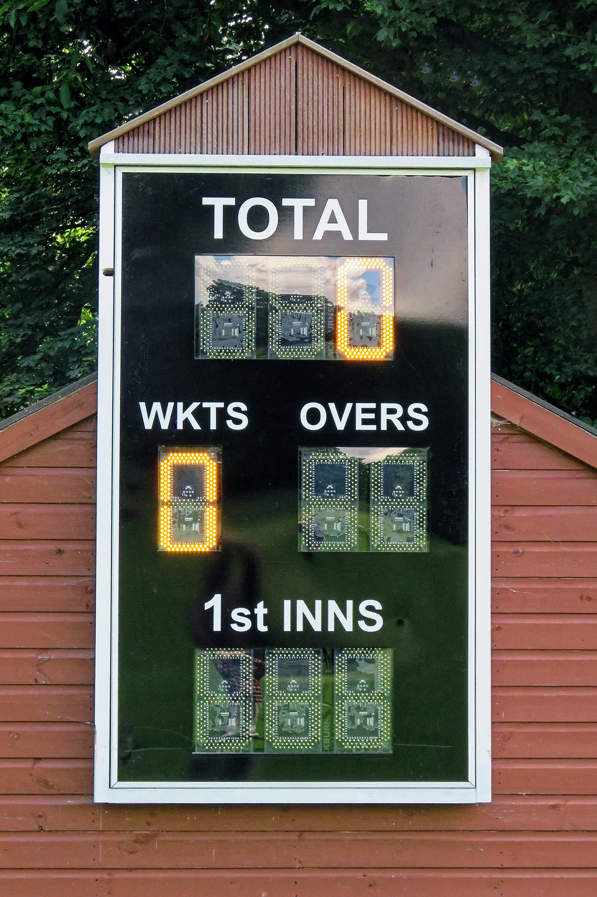
Cada jogador tem um botão que soma 1 ponto, de 0 a 9.
Cada placar tem seu display de 7 segmentos.
O reset volta os dois placares para 0 ao mesmo tempo.
Início 19/08 · Entrega 01/12 · Base: Tocci, Sistemas Digitais (11ª ed.) e datasheets
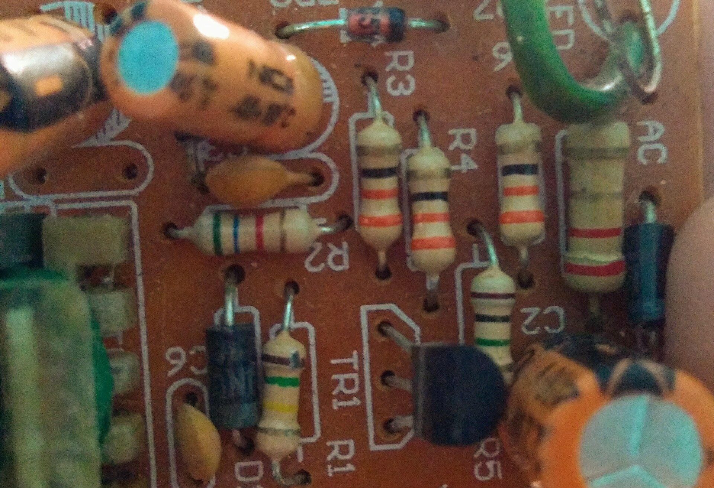
Botão de ponto com filtro RC anti-repique; reset com pull-down
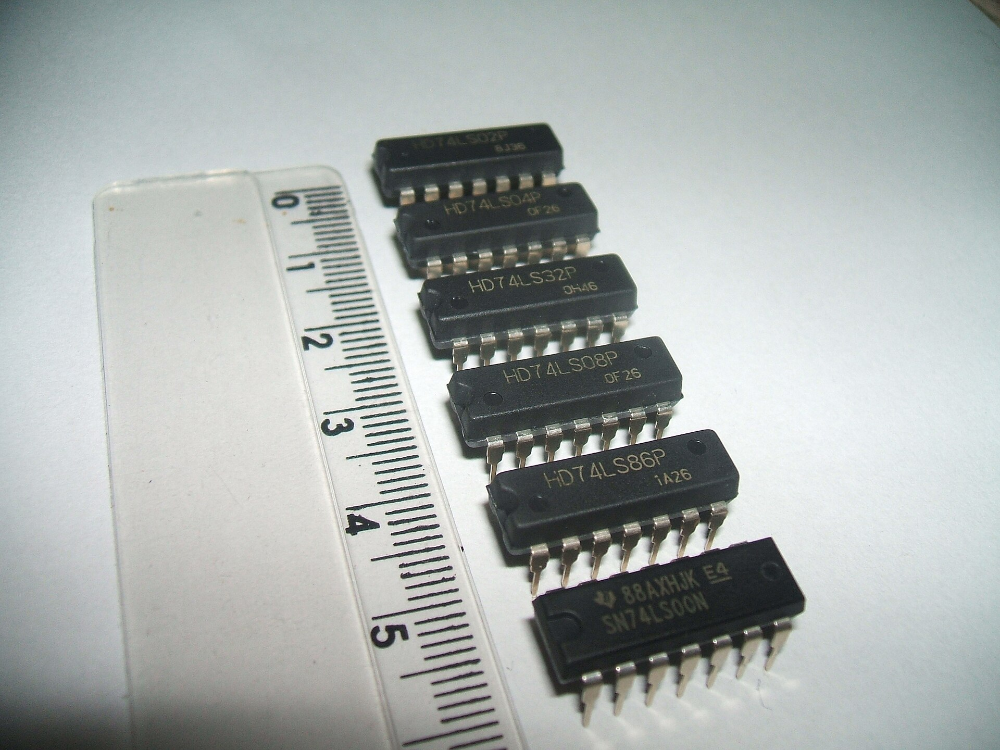
Contador de 4 bits limitado a 0–9 por duas portas OR no reset
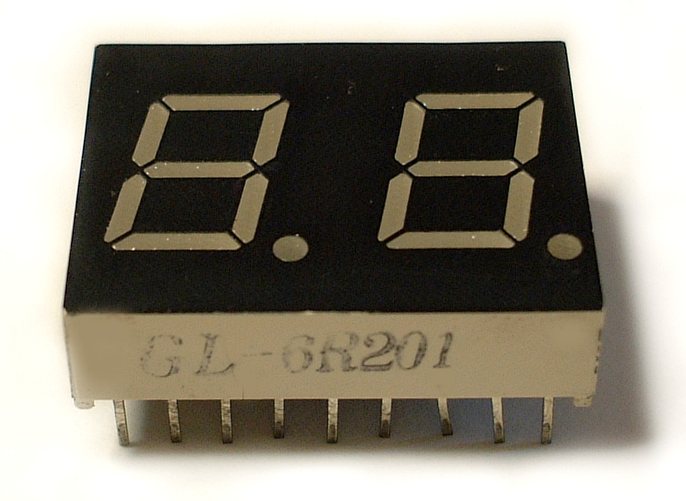
Decodificador BCD → 7 segmentos e display de catodo comum
×2 jogadores: cada um tem contador, decodificador e display próprios. Um único 74HC32 (4 portas OR) e um só botão de reset atendem os dois.
O 10 (1010) é o primeiro estado com Q1 e Q3 em 1 ao mesmo tempo. Ele dispara o reset assíncrono e dura só alguns nanossegundos: o 10 nunca aparece no display.
O mesmo par de portas OR recebe o botão de reset (RST).
Cada equação saiu de um mapa de Karnaugh, com 10 a 15 como don't care. O segmento c só apaga no 2, então sobram três grupos de oito células.
LT' = 1 · BI' = 1 · LE = 0 → o display segue o contador direto
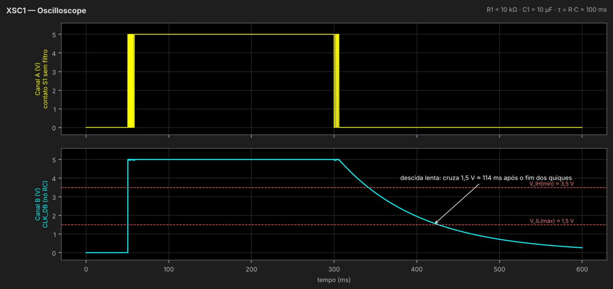
O contato oscila por ~1 ms ao fechar e abrir. Cada oscilação seria um ponto.
C1 carrega na hora e descarrega devagar por R1: o nível lógico não cai.
O ponto entra ao soltar o botão, ≈ 120 ms depois, na borda de descida.
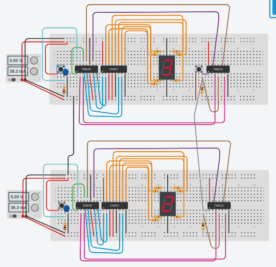
Uma protoboard por jogador, cada uma com 74HC93 → CD4511 → display.
Cada placar conta de 0 a 9 e volta a 0 sozinho no 10º toque.
Um fio leva o reset compartilhado entre as placas: um botão zera os dois.
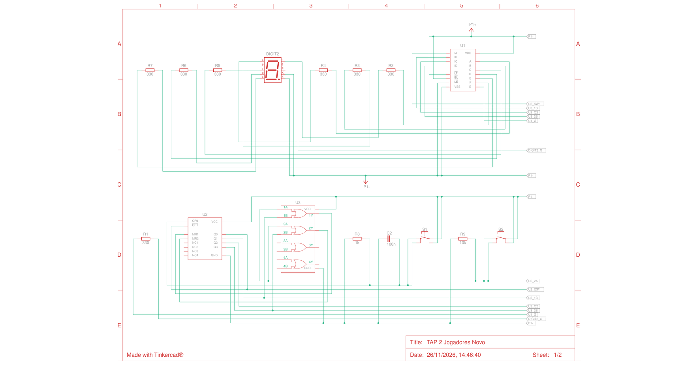
Nova simulação no Tinkercad: folha de um jogador (1 de 2).
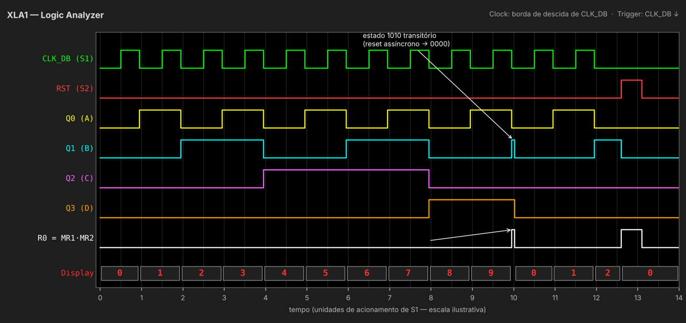
Analisador lógico (XLA1): 12 toques em S1, depois 1 toque em S2.
Q0–Q3 sobem em binário e o display mostra 0 → 9.
Surge o 1010, R0 vai a 1 e o contador volta a 0000.
O reset manual zera o placar a partir do 2.
T1–T7 executados em simulação (21/10–03/11). T8 repete todos na montagem física e ainda não foi executado.
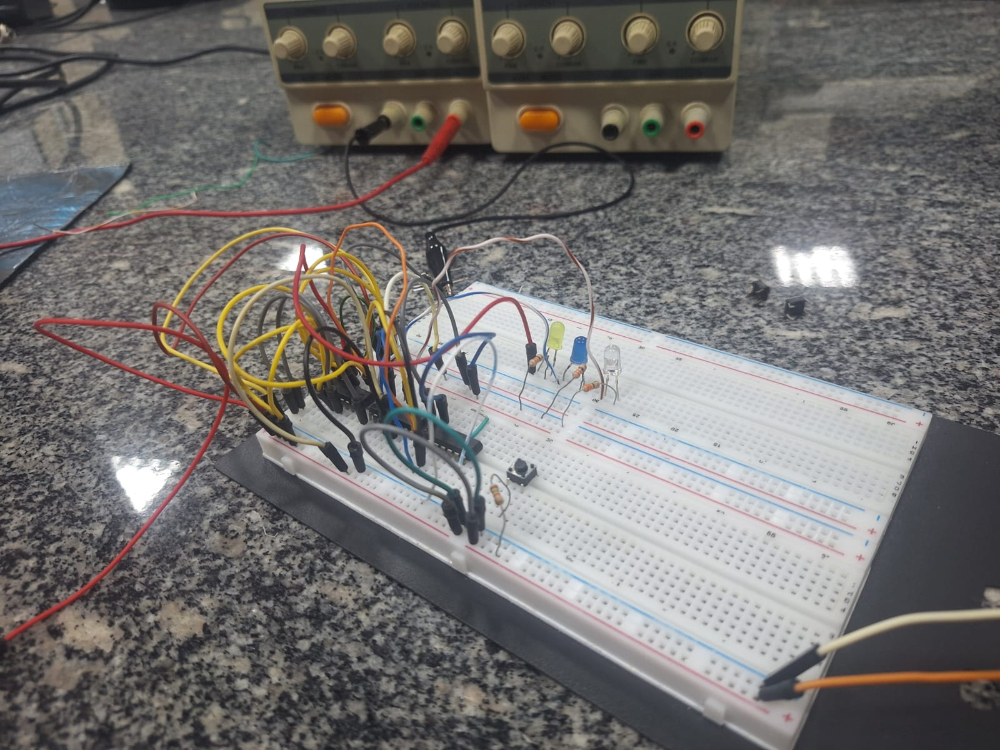
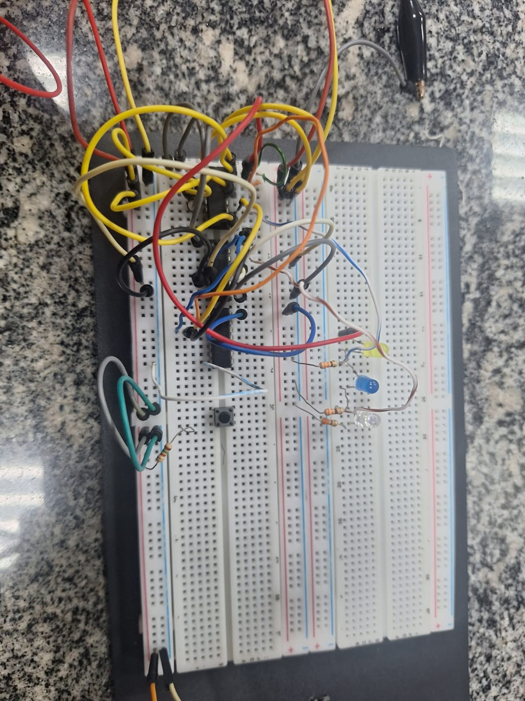
Bancada do laboratório: protoboard alimentada pela fonte de 5 V
Vista de cima: CIs, botão e LEDs de teste
R$ 30,75 por integrante
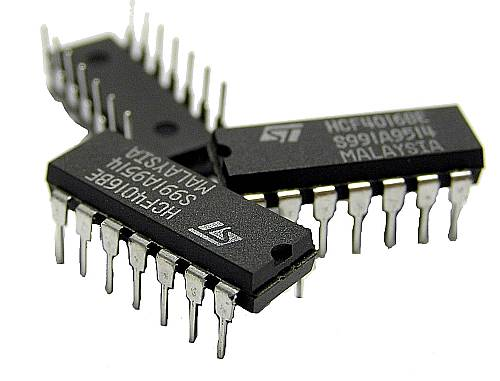
Enquanto o MB102 não chega, usamos a fonte de bancada do laboratório (5 V).
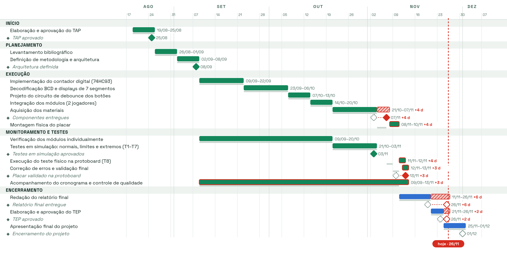
O 74HC93 não tem Schmitt trigger e a descida do RC leva ≈ 120 ms.
Melhoria: um 74HC14 entre o RC e CP0, por menos de R$ 5.
O ponto entra na borda de descida, quando o botão é solto.
Decisão: comportamento aceito e documentado.
Atende o escopo do TAP, mas limita partidas longas.
Melhoria: cascatear um segundo contador para 00–99.
Resolvido: o placar começou com um jogador e foi replicado para dois, compartilhando o 74HC32.
Resultados da placa e prestação de contas; entrega pendente
Termo de Encerramento elaborado; aprovação ainda pendente
O placar funcionando ao vivo na protoboard
Obrigado. A demonstração ao vivo fica para a apresentação final.